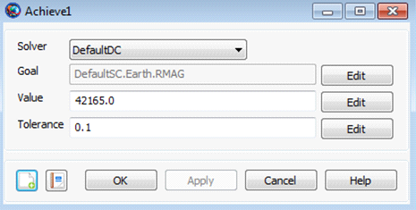

Achieve — Specify a goal for a Target sequence
AchieveSolverName(Goal= Arg1, [{Tolerance= Arg2}])
The Achieve command is used in conjunction with the Target command as part of the Target sequence. The purpose of the Achieve command is to define a goal for the targeter (currently, the differential corrector is the only targeter available within a Target sequence) to achieve. To configure the Achieve command, you specify the goal object, its corresponding desired value, and an optional tolerance so the differential corrector can find a solution. The Achieve command must be accompanied and preceded by a Vary command in order to assist in the targeting process.
See Also: DifferentialCorrector, Target, Vary
| Option | Description | ||||||||||
|---|---|---|---|---|---|---|---|---|---|---|---|
| Arg1 | Specifies the desired value for the Goal after the DifferentialCorrector has converged.
| ||||||||||
| Arg2 | Convergence tolerance for how close Goal equals Arg1
| ||||||||||
| Goal | Allows you to select any single element user defined parameter, except a number, as a targeter goal.
| ||||||||||
| SolverName | Specifies the DifferentialCorrector being used in the Target sequence
|
You use an Achieve command, which is only valid within a Target sequence, to define your desired goal. More than one Achieve command may be used within a Target command sequence. The Achieve command dialog box, which allows you to specify the targeter, goal object, goal value, and convergence tolerance, is shown below.
|  |
A Target sequence must contain at least one Vary and one Achieve command.
| Target command | An Achieve command only occurs within a Target sequence |
| Vary command | Associated with any Achieve command is at least one Vary command. The Vary command identifies the control variable used by the targeter. The goal specified by the Achieve command is obtained by varying the control variables. |